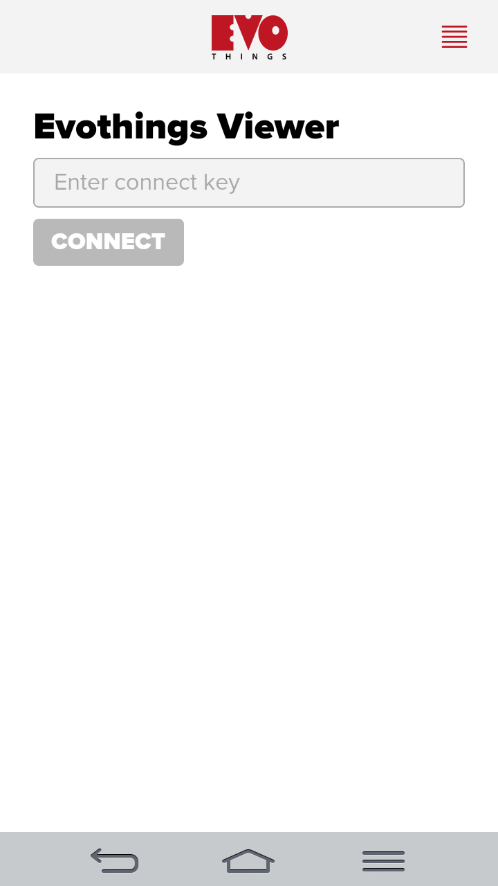

The Evothings Viewer app is the companion for the Evothings Workbench. This is a ready-to-use app, that will get you started instantly with building IoT-enabled mobile applications.
The Evothings Viewer app provides:
Evothings Viewer is available on the Google Play Store and the Apple App Store. Four further details, please refer to the Evothings download page.
Go to the Quick Start section on the Evothings Studio documentation page to get started.

The Evothings Viewer app comes pre-packaged with selected Cordova Plugins. Visit the API Overview for a list of supported plugins.
You can build a custom version of Evothings Viewer with the Cordova plugins you want to use.
The GitHub repository for Evothings Viewer has instructions for how to build the Viewer. Follow the steps outlined in the instructions and you are good to go. If you get stuck, go ahead and ask a question on the Evothings Forum.